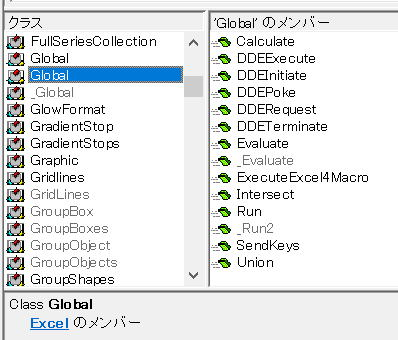

Applicationを省略できるApplicationのメソッド・プロパティ一覧

Applicationには多数のメソッド・プロパティがありますが、
この中には、
Applicationを記述しなければならないものと、
Applicationを省略できるものとが存在します。
Applicationを省略できるかどうかの確認
グローバルに定義されているかどうかは、オブジェクトブラウザ(F2)で確認できます。
このままでは、プロパティもメソッドも全部ひっくるめてABC順になっています。
そこで、プロパティ・メソッド別にします。
メンバーを右クリックして、
そこで、下の方を見てみると、
Abs等々、これらはいわゆるVBA関数ですね。
つまり、関数とメソッドの区別が付きません、そもそも関数も広義にはメソッドですから。
関数以外にも、Application以外のメソッド・プロパティが入っているという事です。
では、Applicationのメソッド・プロパティだけにしたい時には、どうするか、、、
Applicationのプロパティまたはメソッドと分かっているものをクリック選択します。
そして、このExcel.Globalにリンクが付いています。
リンクがあるのなら、なにはともあれクリックしましょう（笑）
では非表示を表示しましょう。
「非表示のメンバーを表示(H)」をクリックします。
そして、再度、
「Excel.Global のメンバ」のExcel.Globalのリンクをクリックします。
グローバルに定義されているApplicationのメソッド・プロパティになります。
そんなに多い数ではありませんね。
Globalがそもそも非表示メンバーなので、非表示メンバーの中の非表示メンバーという事になります。
今回のApplicationのメソッド・プロパティではありません。
入っているメンバーは「Global」と同じみたいなので今回は気にしないことにします。
Applicationを省略できるApplicationのメソッド一覧
| メソッド | 説明 |
| Calculate | 計算を実行します。 |
| DDEExecute | 指定されたDDEチャネルを経由して、他のアプリケーション内でコマンドまたは動作を実行します。 |
| DDEPoke | アプリケーションにデータを送ります。 |
| DDERequest | 指定されたアプリケーションの情報を返します。 |
| DDETerminate | ほかのアプリケーションへのチャネルを閉じます。 |
| Evaluate | 使用する名前を、オブジェクトまたは値に変換します。 |
| _Evaluate | Evaluateと同様機能の非表示メンバー |
| ExecuteExcel4Macro | Excel4.0マクロ関数を実行し、関数の結果を返します。 |
| Intersect | 複数のセル範囲の共有セル範囲を表すRangeオブジェクトを返します。 |
| Run | マクロの実行または関数の呼び出しを行います。 |
| _Run2 | Runと同様機能の非表示メンバー |
| SendKeys | アクティブなアプリケーションにキーコードを転送します。 |
| Union | 2つ以上のセル範囲の集合を返します。 |
Applicationから書き始めている人の方が多いかもしれません。
本サイトのサンプルVBAでは省略して書いている事の方が多いです。
ただしRunについては、さすがに分かりづらいのでApplicationから書いています。
以下、これらのメソッドを使っている参考ページになります。
_（アンダースコア）付きの非表示メンバーの使い方
_Evaluate
_Run2
これらは特殊な非表示メンバーですが、これらを使う時にはVBAの書き方が変わります。
オブジェクトブラウザーで非表示メンバーを表示していれば、
非表示メンバーを表示していない時には、[]をタイピングしてください。
_（アンダースコア）付きの非表示メンバーは使うべきではないと思いますし、使う理由もないとは思いますが。
Applicationを省略できるApplicationのプロパティ一覧
| 名前 | 説明 |
| ActiveCell | 最前面に表示されている、アクティブウィンドウ(一番手前のウィンドウ)または指定されたウィンドウでのアクティブセルを表すRangeオブジェクトを返します。 |
| ActiveChart | アクティブなグラフシートまたは埋め込みグラフを表すChartオブジェクトを返します。 |
| ActiveDialog | 非表示メンバー、VBA言語リファレンスに記載なし |
| ActiveMenuBar | 非表示メンバー、VBA言語リファレンスに記載なし |
| ActivePrinter | 有効なプリンターの名前を設定します。 |
| ActiveSheet | 作業中のブック、および指定されたウィンドウまたはブックのアクティブシート(一番手前のシート)を表すオブジェクトを返します。 |
| ActiveWindow | 一番手前に表示されているアクティブウィンドウを表すWindowオブジェクトを返します。 |
| ActiveWorkbook | 一番手前に表示されている、アクティブウィンドウ内にあるブックを表すWorkbookオブジェクトを返します。 |
| AddIns | [アドイン]ダイアログボックス([開発]タブの[アドイン]コマンド)に表示されるすべてのアドインを表すAddInsコレクションを返します。 |
| Application | 対象となるオブジェクトが指定されない場合は、Excelアプリケーション(Applicationオブジェクト)を返します。 |
| Assistant | 非表示メンバー、VBA言語リファレンスに記載なし |
| Cells | アクティブシートのすべてのセルを表すRangeオブジェクトを返します。 |
| Charts | 作業中のブックのすべてのグラフシートを表すSheetsコレクションを返します。 |
| Columns | 作業中のワークシートのすべての列を表すRangeオブジェクトを返します。 |
| CommandBars | Excelコマンドバーを表すCommandBarsオブジェクトを返します。 |
| Creator | 現在のオブジェクトが作成されたアプリケーションを示す32ビットの整数を取得します。 |
| DDEAppReturnCode | 前回受け取ったDDE応答メッセージから、アプリケーション所定のDDEリターンコードを返します。 |
| DialogSheets | 非表示メンバー、VBA言語リファレンスに記載なし |
| Excel4IntlMacroSheets | 指定されたブックのすべてのMicrosoftExcel4.0インターナショナルマクロシートを表すSheetsコレクションを返します。 |
| Excel4MacroSheets | 指定されたブックのすべてのMicrosoftExcel4.0マクロシートを表すSheetsコレクションを返します。 |
| MenuBars | 非表示メンバー、VBA言語リファレンスに記載なし |
| Modules | 非表示メンバー、VBA言語リファレンスに記載なし |
| Names | 作業中のブックのすべての名前を表すNamesコレクションを返します。 |
| Parent | 指定されたオブジェクトの親オブジェクトを取得します。 |
| Range | セルまたはセルの範囲を表すRangeオブジェクトを返します。 |
| Rows | アクティブシートがワークシートのとき、そのワークシートにあるすべての行(Rangeオブジェクト)を返します。 |
| Selection | Applicationオブジェクトでは、アクティブウィンドウで現在選択されているオブジェクトを返します。 |
| Sheets | 作業中のブックのすべてのシートを表すSheetsコレクションを返します。 |
| ShortcutMenus | 非表示メンバー、VBA言語リファレンスに記載なし |
| ThisWorkbook | 現在実行中のマクロコードが記述されているブック(Workbookオブジェクト)を返します。 |
| Toolbars | 非表示メンバー、VBA言語リファレンスに記載なし |
| Windows | すべてのブックのウィンドウを表すWindowsコレクションを返します。 |
| Workbooks | 開かれているすべてのブックを表すWorkbooksコレクションを返します。 |
| WorksheetFunction | WorksheetFunctionオブジェクトを返します。 |
| Worksheets | Applicationオブジェクトでは、作業中のブックのすべてのワークシートを表すSheetsコレクションを返します。 |
Applicationのプロパティの中でも、
ブック・シート・セル
これらに関するプロパティについては、ほとんどの場合Applicationは省略して書いている事と思います。
Applicationを省略してしまうと分かりづらいプロパティというのも特段に無いと思いますので、
Applicationのプロパティの中でApplicationを省略できるものは省略したほうがVBAが簡潔に済むので良いでしょう。
最後に一言
VBAでちょっとした疑問がわいたとき、まずはWEB検索します。
でも、WEB検索してもなかなか目的のものが得られない時は多々あります。
そんな時に最後に頼れるものがオブジェクトブラウザーになります。
オブジェクトブラウザーの中を探せば、必ず目的の情報の糸口がどこかにあるはずです。
オブジェクトブラウザーの世界を散歩してみると新しい発見があって楽しいかもしれませんよ。
同じテーマ「マクロVBA技術解説」の記事
マクロでShift_JIS文字コードか判定する
Byte配列と文字コード関数について
VBA+SeleniumBasicで検索順位チェッカー（改）
Applicationを省略できるApplicationのメソッド・プロパティ一覧
PowerQueryの強力な機能をVBAから利用する方法
ShapesとDrawingObjectsの相違点と使い方
新規挿入可能なシート名の判定
VBAにおける配列やコレクションの起点について
VBAのマルチステートメント（複数のステートメントを同じ行に）
クリップボードに2次元配列を作成してシートに貼り付ける
ユーザー定義型の制限とクラスとの使い分け
新着記事NEW ・・・新着記事一覧を見る
VBA100本ノック 100本目：WEBから100本ノックのリストを取得｜VBA練習問題（3月3日）
VBA100本ノック 99本目：自動席替え（行列と前後左右が全て違うように）｜VBA練習問題（3月2日）
VBA100本ノック 98本目：席替えルールが守られているか確認｜VBA練習問題（3月1日）
VBA100本ノック 97本目：Accessデータを取得（グループ集計）｜VBA練習問題（2月27日）
VBA100本ノック 96本目：Accessデータを取得（マスタ結合&抽出）｜VBA練習問題（2月26日）
VBA100本ノック 95本目：図形のテキストを検索するフォーム作成｜VBA練習問題（2月24日）
VBA100本ノック 94本目：表範囲からHTMLのtableタグを作成｜VBA練習問題（2月23日）
VBA100本ノック 93本目：複数ブックを連結して再分割｜VBA練習問題（2月22日）
VBA100本ノック 92本目：セルの色を16進で返す関数｜VBA練習問題（2月20日）
VBA100本ノック 91本目：時間計算（残業時間の月間合計）｜VBA練習問題（2月19日）
アクセスランキング ・・・ ランキング一覧を見る
1.最終行の取得（End,Rows.Count）｜VBA入門
2.RangeとCellsの使い方｜VBA入門
3.変数宣言のDimとデータ型｜VBA入門
4.マクロって何？VBAって何？｜VBA入門
5.Range以外の指定方法（Cells,Rows,Columns）｜VBA入門
6.セルのコピー&値の貼り付け（PasteSpecial）｜VBA入門
7.繰り返し処理（For Next)｜VBA入門
8.セルに文字を入れるとは（Range,Value）｜VBA入門
9.マクロはどこに書くの（VBEの起動）｜VBA入門
10.とにかく書いてみよう（Sub,End Sub）｜VBA入門
- ホーム
- マクロVBA応用編
- マクロVBA技術解説
- Applicationを省略できるApplicationのメソッド・プロパティ一覧
このサイトがお役に立ちましたら「シェア」「Bookmark」をお願いいたします。
記述には細心の注意をしたつもりですが、
間違いやご指摘がありましたら、「お問い合わせ」からお知らせいただけると幸いです。
掲載のVBAコードは動作を保証するものではなく、あくまでVBA学習のサンプルとして掲載しています。
掲載のVBAコードは自己責任でご使用ください。万一データ破損等の損害が発生しても責任は負いません。